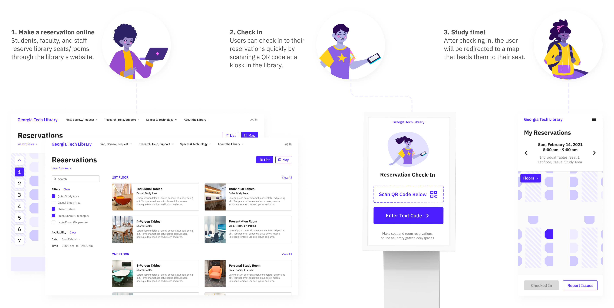
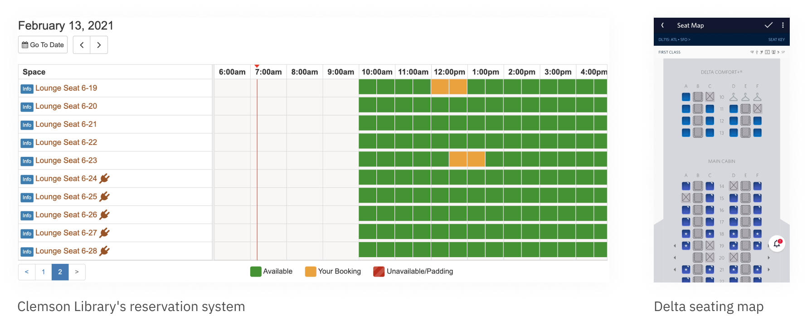
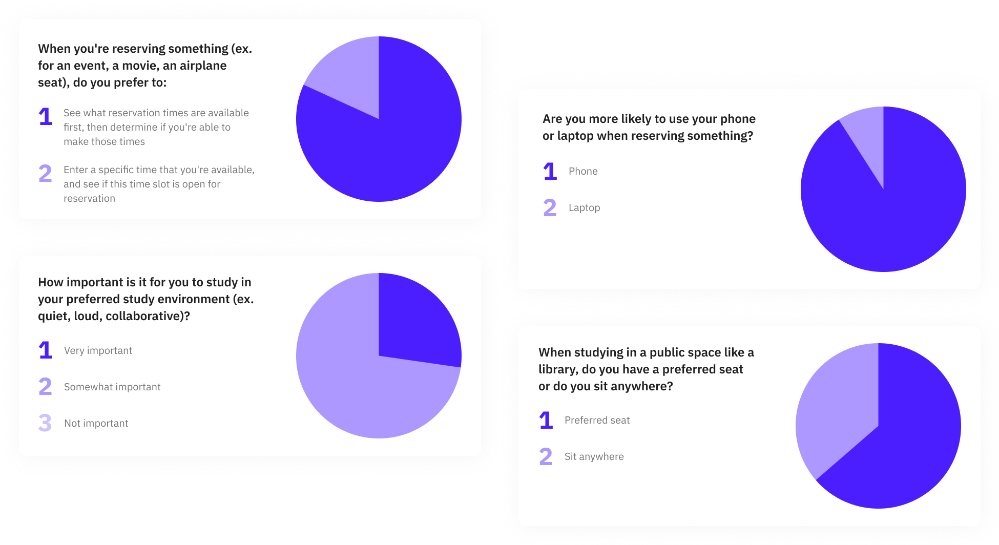
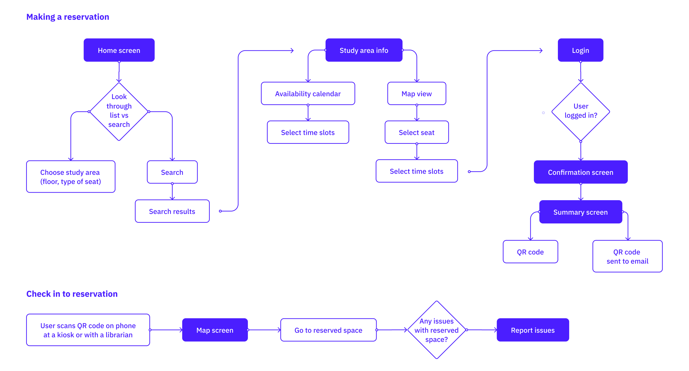
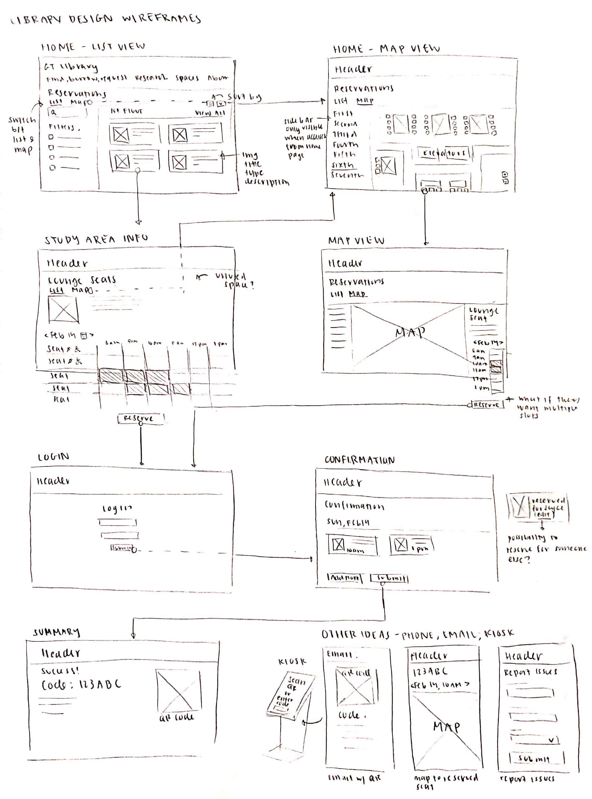
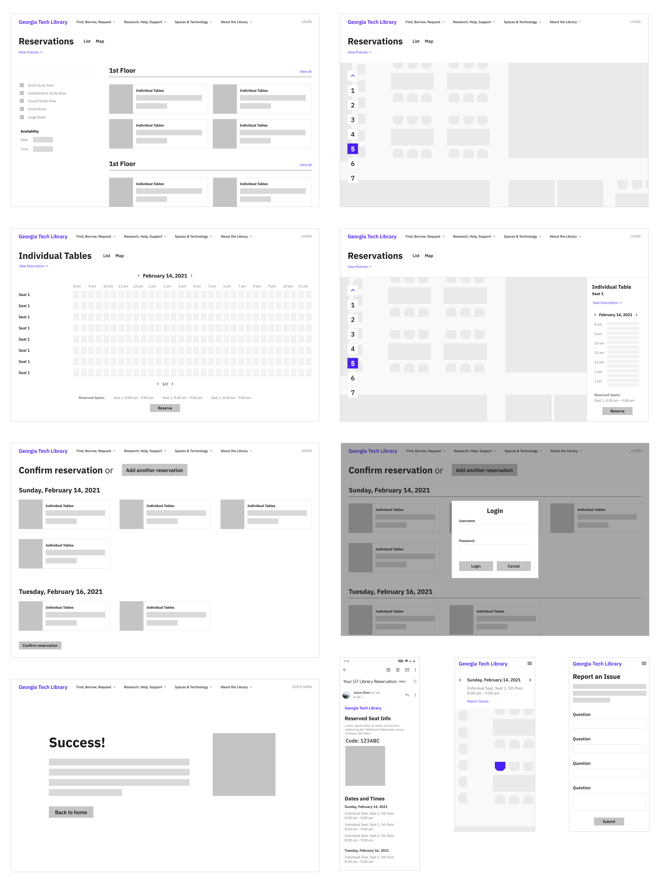
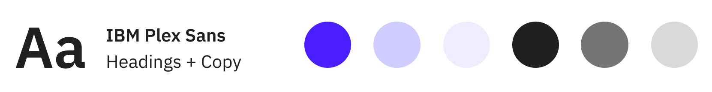

Type
Personal project, website
Role
User Research, UI Design
Tools
Figma, Vectary, Google Sheets
Duration
Feb 2021 (1 week)
For this project, I was given a week to envision and design a user experience to help students, faculty, and other community members in my school reserve library spaces. I explored current platforms for library reservations and looked for ways to streamline the reservation process, implement new visual features, and automate the check-in process.
Before jumping into user research and design, I needed a better understanding of how my school's library is laid out and how their current reservations systems work. Our library consists of seven floors, and each floor is either a casual, collaborative, or quiet space. Students essentially choose what floor they want to study on by how loud they are. Currently, people can reserve collaboration rooms but not individual seats.

I looked at the library reservation systems of a few different schools, which were mostly powered by a service called SpringShare. In most cases, users would filter by a particular building, then by a particular floor/study zone, and then get a list of seats and their available times.
While these reservation websites make it easy to view the availability of each seat, I also thought about how seating maps can be used to better visualize the library. Since seating maps are most commonly used in booking airline tickets and movie tickets, I took a look at how those products were designed on both mobile and desktop devices.
Going into ideation, my biggest questions were how people used reservation tools, their studying preferences, and whether I should design for mobile or desktop. I surveyed a few people to get help me understand and clarify how I should structure the user flow. In particular, the first question helped inspire the timetable tool I used in my final design.
Using the websites I explored and surveys I conducted during the research process, I created a user flow to visualize both the reservation process and check-in process. For the former, I explored three key parts: the home screen for selecting a seat type, the seat information screen to choose a reservation time, and the login/confirm/summary screens. For the latter, I looked into how QR codes and maps can be used to assist the process.
Since users have to transition from desktops for reservation purposes to phones for check-in purposes, sending QR codes to their emails will allow them to access the code on both devices.
I first drew down my wireframe ideas on paper and laying out the screens that I wanted to design. Because of the limited time I had on this project, it was helpful to be able to quickly sketch out different ideas before heading to more complex wireframes.
I took the ideas I drew out on paper and refined them into mid-fi wireframes.
For the visual design of this product, I decided on a clean, minimal design with a single font and a blue-purple color theme. This helped me keep a consistent and simple style while still giving me the room to play with color accents.
Users are provided a list of seating areas in the library, and can filter for their preferred seating areas. They can click on each seating area and select their reservation times using a timetable grid.
In addition, users can view and reserve seats from a map view of the library. The map shows users what seats are available at a certain time on each floor.
Users are then directed to a confirmation page that lists out all of their reservations. Once they proceed, a log in popup will show up if the user is not already logged in, followed by a final screen with a QR code and check-in instructions.
Users also receive the QR code and check-in instructions through email, which they can scan at the library's kiosk. They will then be redirected to a map that points them to their seat.
From the check-in page, users can report any issues they have with their reservation.
Overall, I had a really fun time working on this project! I enjoyed the fast pace of this project, which pushed me to get my ideas out without getting caught up in details. It was also interesting designing for an ecosystem of platforms (like kiosks!) and exploring different ways to visualize information.
If I have more time in the future, I would like to take more time on user research + testing and make some improvements to my design. Some ideas I have in mind are:
Let's get in touch!